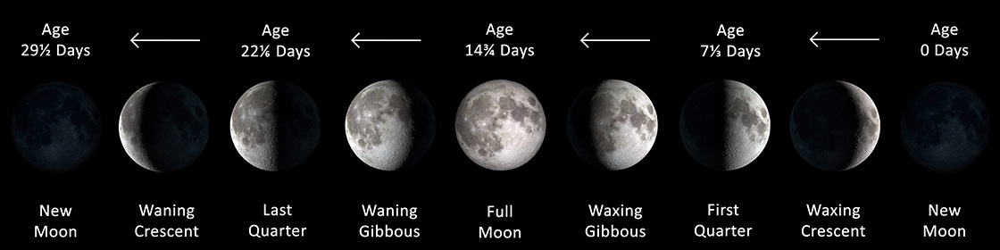
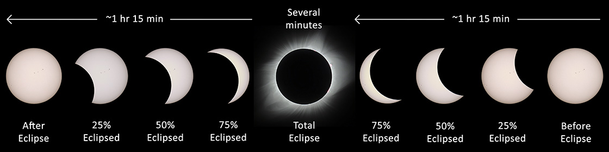
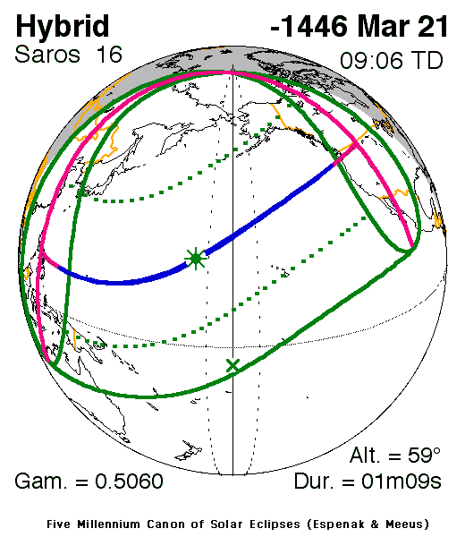
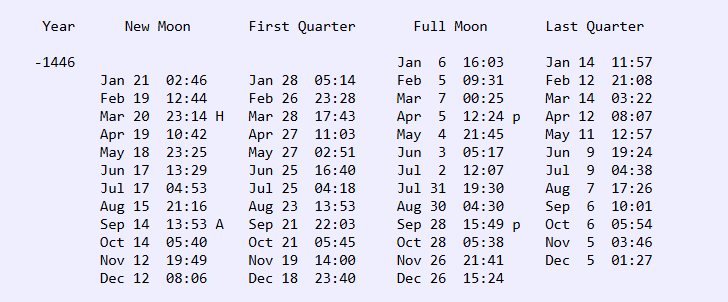
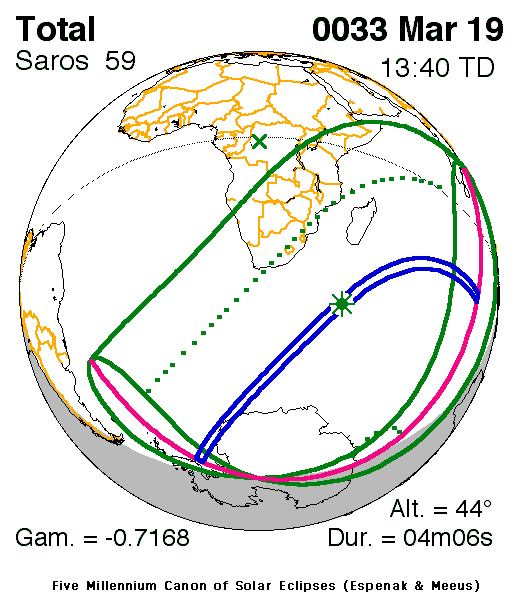
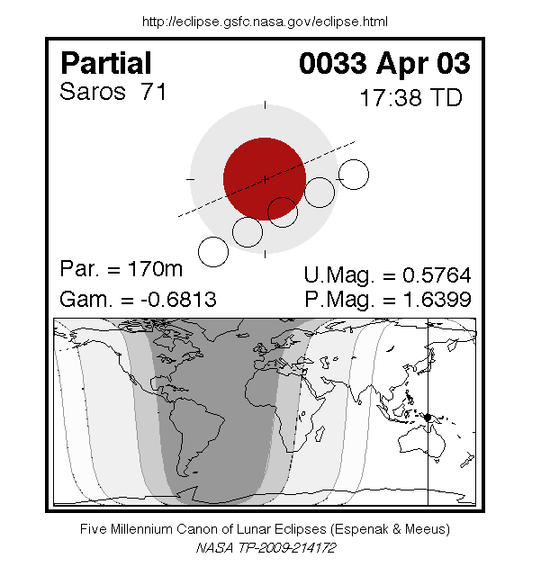
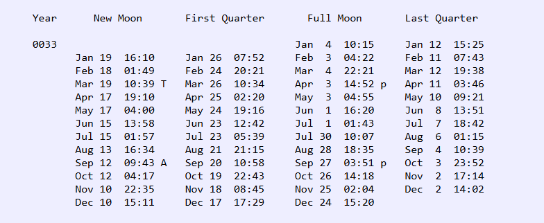

Have you ever wondered Easter and Good Friday falling in different months of the calander every year? If so, did you ever think of it leading to calanders, Sun, Moon, rotation and revolution and how time works and are we keeping it, in the right way? If so, then you will enjoy this read.
If you are like me, you might have thought that the time flies, but yet you will remind yourself that we lived through every second of it, or in contrast the other times when we can't wait to get over with the wilderness of this life. But how are we measuring time?, we know instinctively that it does not pace when we are happy or otherwise. At this point of time have you looked at the nature tuned perfectly?, and did you ever think of God, observing the beautiful harmony that we see around us?. In this article you will get to know one small aspect of that harmony against a dimension called time.
In the Beginning...
The Scriptures begin with the Phrase, "In the beginning...", in other words it is the grand announcement of the birth of Time. In the book of Genesis, when we read, "In the beginning(time) God created the heavens(space) and the earth(matter)", we observe only God is the one who is clearly outside of time, space and matter i.e. outside of this universe. The scripture also says that He is in the unapproachable light (1 Timothy 6:16)
– Genesis 1:14-15 NASB
It was not long until the mankind observed that this universe is full of patterns, symmetry and cycles, there is a bueaty in this, God created the universe to run in cycles in days, weeks and years and He added harmonys of creating the birds, trees and animals in each cycle calling it a day, just like when a musician loops the sounds and adds a new harmony in each cycle to create a symphony.
Having the understanding that everything in this universe works on a entity called time, it is vital that we should know about this, and whether we are following it excatly as the Time keeper created it to be...
The measure of a Day
The day is one of the fundamental measures of time, a building block of this perfect and beautiful harmony of time, but the measure of this day started in the beginning, from the sunset i.e. a day is passed when the sunset arrives.
– Genesis 1:5 NASB
The measure of a Week
A week starts from the Yom Rishon(Sunday in the Gregorian Calander) and ends on the Shabbat(Saturday in the Gregorian Calander). God created this universe in 6 days, on each day He created different things, such as on 4th day He created, Sun, Moon and the Stars, and on the 6th day He made mankind and on the 7th day He rested from His work, therefore a week has 7 days in it and one day of rest, or it has been like this for centuries until recently.
– Genesis 2:3 NASB
"Remember to observe the Sabbath day by keeping it holy. You have six days each week for your ordinary work, but the seventh day is a Sabbath day of rest dedicated to the LORD your God. On that day no one in your household may do any work. This includes you, your sons and daughters, your male and female servants, your livestock, and any foreigners living among you." – Exodus 20:8-10 NLT
The measure of a Month
A month is measured from a new moon to new moon.
– Isaiah 66:23 NASB
Before getting to know how to determine an year, we will try to know what is a luni-solar year:
So we got to understand that in God's calendar the months are lunar, so the moon is a sign of determining which day of the month it is. As such we got to know that there are 12 months in an year. Now there is something called solar year, a solar year is when Earth takes one complete revolution around the Sun. We know that rotation causes days and revolution causes seasons. Therefore, in a luni-solar calendar after 12 lunar months, there is some time to be tracked to complete one solar year. In other words, 12 lunar months don't fit into a solar year exactly, as a result if you do not account for that, the festivals that God ordained will move closer to the winter seasons every year i.e. when you do not account for this time, the Passover in the next year comes closer to winter rather than in the spring, which is the God's appointed time to celebrate Passover. So to keep the festivals in the appropriate seasons, there is a need to account for that some time.
The measure of a Year:
This is where it gets more interesting, so an year is divided into 12 months, but the new year is determined by the natural events like the observance of the Barley crop, so when the Barley crop is ripe, then the new year is declared on the first day of new moon after the equinox. If the Barley crop is not ripe, then a month is added to the current year, to keep track with the solar year and to keep the festivals in their right seasons. Interestingly the current Jewish calendar proposed by Hillel II observed that the 235 lunar months fit almost accurately into 19 solar years, so to sync the lunar months to the solar years, he proposed an extra lunar month in a year for every 2-3 years, so that the festivals occur in their appointed seasons.
Now that we understood, how time is tracked in a luni-solar calendar, we will go to why it is the accurate way of tracking time and how exactly it started.
When God said...
– Genesis 1:14-15 NASB
It is Lord's good pleasure that these lights in the heavens are used to track days, seasons, years and also serve as signs. Therefore, without a doubt this is a right way of tracking time.
However, God did not particularly emphasize on tracking time, I am thinking because there were no festivals or any remembrance days(as of my understanding now), but we know that time is cyclical, we can understand that from Solomon's words:
– Ecclesiastes 1:9-11 NASB
So, even-though God did not ask us to keep time when He created the world, He is tracking time and He know exactly what happens when, what is more better than to hear from the Lord only...
– Isaiah 46:9-10 NASB
“Behold, the former things have come to pass, Now I declare new things; Before they sprout I proclaim them to you.”
– Isaiah 42:9 NASB
The Beginning of Time Keeping
So now going back in time..., now we are in 1446 BC in Egypt. A cruel Pharoah is ruling Egypt and had enslaved Israelites with hard bondage. But the good news is God appointed a leader who raises among them, to use him to lead Israel out of bondage. The man is Moses. Fast-forward to the time when the Israelites finally going to receive their freedom, God said,
– Exodus 12:1-2 NASB
So when the Lord said, this is the time to start the calendar, then that is exactly the time to start the calendar. Now that we know there is a beginning to this luni-solar calendar. Awesome. The exact point where we can start tracking time after the creation. In a luni-solar calendar 12 lunar months don't exactly fit into a solar year, it is so fascinating to know, why did God choose this point of time to start His awesome way of tracking time.
Before we go into that we have to know about equinox, Solar Eclipse, Lunar Eclipse. Equinox is that time of the year, where the day is exactly divided equally i.e. 12 hour day and 12 hour night. So equinox always falls around March 20- 21 in the Gregorian Calander every year, fascinating right?, the nature follows God's law.
Solar Eclipse
Solar Eclipse is that phenomenon where the moon comes in between the sun and the earth, covering the sun, causing blackout for brief amount of time on some part of the earth.
Lunar Eclipse
A Lunar Eclipse is when the Earth comes in between the Sun and Moon, casting a shadow of Earth on moon.

The fascinating thing is, the Solar Eclipse happens only during the new moon and the Lunar Eclipse happens only during the full moon. So for the lunar months to fit exactly into a solar year, there must be a same starting point i.e. a right time to start a calendar would be a point where the lunar months are already exactly fitting into the solar years.
So here we see that the solar eclipse happened on the equinox, i.e. the same day when the month of Nissan (first month in the Jewish calendar) should start as this day is the new moon day. Remember? a day starts from the sunset and ends at the sunset. 
Praise God.
Not only the Solar Eclipse let's look at what happened on the day of the Passover…
A LUNAR ECLIPSE
– Psalm 19:1 NASB
Now Passover is a significant event the Lord wanted Israel to observe, because that signified Lord's mighty works in delivering the children of Israel out of Egypt.
– Numbers 9:2-3 NASB
Fast forward to 33 AD
Now we know that everything is a shadow pointing us all to the Lord Jesus Christ. This is getting very interesting, let's hear from Lord Jesus:
– John 11:9 NASB
I would like to believe that Lord Jesus Christ spoke these words during the time of equilux (by faith), and He bent the time towards Him, and everything in this world both past and future, pointing to Him.
– Colossians 2:16-17 NASB
In all wisdom and insight He made known to us the mystery of His will, according to His good pleasure which He set forth in Him, regarding His plan of the fullness of the times, to bring all things together in Christ, things in the heavens and things on the earth.
– Ephesians 1:8-10 NASB
Now let us look at the mind blowing fact of what happened at the time when Lord Jesus spoke those words and at the time of His death:
1st of Nissan on 33 AD...
Woah!, there was the Solar eclipse which also means it is a new moon day, signifying the start of the new year. Curious to find out what happened on the day of the Passover?, which is also the day of the Lord's crucifixion.
Praise God. A Lunar Eclipse occurred just like on the day of the Passover, in the year of Exodus.
In conclusion, the right time to start calculating the time was the year of exodus and the next best time is the year of the Lord's crucifixion.